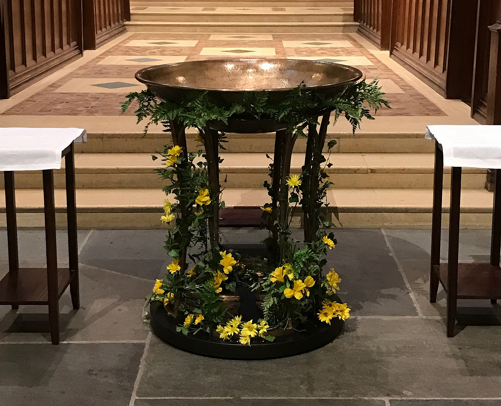

Schedule
Below is the schedule for the Christ Church Cranbrook Flower Guild 2021-22 Program Year.
| Meeting Date | Leader | Assistant | Meeting Manager | Special Notes |
|---|---|---|---|---|
| 11/1 | Patrick | Alina | Frank | All Saints' Day |
| 11/2 | Frances | Annemarie | Marshall | All Souls' Day |
| 11/6 | Minnie | Patrick | Marshall | N/A |
| 11/13 | Lisa | Annemarie | Frank | N/A |
| 11/20 | Alina | Frances | Doug | N/A |
| 11/27 | May | Stephanie | Patrick | First Week of Advent |
| 12/4 | Jerry | Stephanie | Lisa | Second Week of Advent |